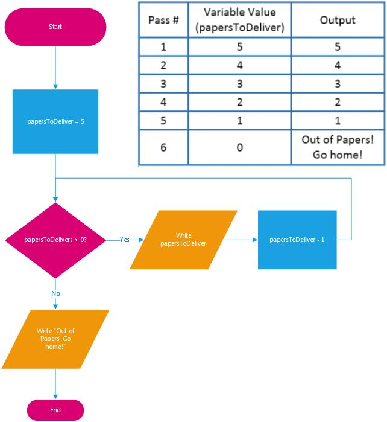
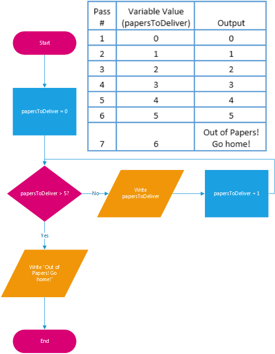

Intro to Programming Concepts
For True Beginners!
@gdiannarbor | #gdia2
Computer Programs
-
Computer programs are everywhere.
- Run parts of your car.
- Let you check your email.
- Underlie that favorite app on your smartphone.
- But what are they, really?
What is a Computer Program?
At its core, a computer program is
a way of getting something done.
- One of the ways to accomplish "getting something done" is a list of instructions that tells the computer exactly what to do and allows interaction with human beings.
- Those instructions have to be written in a "language" that the computer can understand.
Programming Languages
A programming language is, basically, a set of strings (letters, numbers, commands) that are turned into machine code that the computer can understand.
The language you use for a program depends on a number of things:
- How the program will be used.
- What you want the program to do.
- What languages you know.
Programming Languages
For example:
- To develop websites, you might use HTML, JavaScript, Python, Java, PHP.
- To create databases and move information in and out of them, you might use MySQL, SQL, Dbase.
- To write applications like Microsoft Word or Adobe Acrobat, you might use C#, Java, Visual Basic
Programming Languages
- Computers don’t exactly understand programming languages (such as Java or Python). They need to be transformed into the computer language that they can understand.
-
That computer language is strings of 1’s and 0’s-- binary numbers that most people can’t read easily-- to be able to do anything with them.
- For example, the letter 'A' in a computer has the binary representation: 01000001.
- Despite being able to decipher those unintelligible strings of 1’s and 0’s, computers are actually pretty dumb.
Important to Remember
One of the most important things to remember is that when programming, you are doing something for people, and that the computer and the program mediate that.
~Michael Bolton (Software Tester extraordinaire)Computers are Dumb
- Computers can only do what they have instructions for-- and they take those instructions VERY literally.
- As a result, you have to tell them every single thing you want them to do and every single thing to take into consideration.
- If you leave any instructions out (or put them in the “wrong” order), the results might not be what you expect.
Memory
A computer doesn't have a memory like we do.
Sure, a computer has "memory"-- In fact it has a few different kinds...
Kinds of Memory - ROM
- ROM or Read-only memory is the more permanent kind.
- ROM is used in the computer so that the processor does not have to look for important pieces of data when switched on, like the operating system.
- For the most part, you cannot edit files in ROM and data on it cannot be erased by turning off your computer.
Kinds of Memory -
Hard-Disk Storage
- More permanent, more long term memory.
- This memory is what the computer uses to store programs and files that you create.
- Examples would be the hard drive on the computer, thumb drive, or external hard drive.
Kinds of Memory - RAM
- RAM or Random-access memory is less permanent.
- RAM is the memory that the computer uses to do its "thinking" (such as when you're working on a Word document, the changes you make before you hit Save, are stored in RAM).
- It holds raw data waiting to be processed as well as the program instructions for processing that data
- It holds the results of processing until they can be stored more permanently on disk or tape
- When computer is turned off, data in RAM is gone and cannot be recovered unless it has been saved.
Difference between RAM and Hard-Disk Storage?
- RAM is temporary storage
- Hard-disk storage is more permanent
- RAM has less storage capacity
- Hard-disk has more storage capacity
Programming structures
-
No matter what programming language you use, the structures that are available are usually fairly similar.
- Variables
-
Logical structures:
- If/Else statements
- Loops
Variables
- A variable is essentially a storage container for information.
-
Examples:
- age = 28
- color = blue
- There are different kinds of variables based on the information that you want to store.
Integer Variables
Integer variables are used to store
positive or negative whole numbers.
int bookCount=2
- Amazon Example: number of books you can order is an integer (also the number in 'cart').
- Amazon stores this field as an integer because they’ll want to do calculations with it. If you order 2 copies of a book, the program multiplies the price by 2 to get the total cost.
- However, this must always be a whole number (you cannot order 2.5 books).
Floating Point Variables
Floating Point variables are used to store
positive or negative real numbers.
float price=9.95
- Amazon Example: the price of the book you are purchasing ($9.95).
- Amazon stores this field as an floating point because they’ll want to do calculations with it. If you order 2 copies of a book, the program multiplies $9.95 by 2 to get the total cost.
String Variables
String variables are used to store text.
String name="Bob Jones"
- Amazon Example: if you went into your profile, fields like name, address, state, and city are strings.
- Usually when a string is created in the program, it's surrounded by quotation marks.
Numbers as strings
String zipcode="48070"
- You can store a number as a string variable.
-
If you store a number as a string variable, you can't use it in any math calculations.
- For example, credit card numbers are integers but you would never use them in a mathematical calculation.
- Another example would be postal codes. Even though the USA uses only numbers, not all countries do. So if you make your zip code field an integer, no other country can use it except the USA.
Boolean Variables
Boolean variables are used to store the value
TRUE or FALSE (yes or no).
bool isLoginValid = true
- You define a condition, then use a Boolean to tell the computer whether that condition is true or false.
-
Amazon Example:
- If isLoginValid equals true, your name shows up, your cart is populated, etc.
Operators
- Operators are words or symbols that let you compare, combine, or evaluate something to produce an output.
-
A few examples:
- == (equal to)
- > (greater than)
- < (less than)
- >= (greater than or equal to)
- <= (less than or equal to)
- != (not equal)
- && (and)
- || (or)
If / Then / Else
If / Then / Else statements evaluate a condition
and take actions based on the result.
- If the condition is true, the computer does the action or actions that are listed after the IF statement (in some languages, the "Then" is implied).
- If the condition is false, the computer does the action or actions that are listed in the Else statement.
If/Then/Else Examples
- Another Amazon example...
- "IF" you're logged in, show your name and cart numbers. "ELSE", show a link to the login page.
- "IF" you're an Amazon Prime member, you get free shipping. "ELSE", you get to pay for shipping!
Let's Do Some If / Then / Else!
- For this excercise, we're using C#.
- Go to tutorialspoint.com, which is an online IDE to practice writing code.
IDE - Integrated Development Environment
Let's Do Some If / Then / Else!
Part 1 - If
- Change the numbers to see what happens.
- Change the operators (greater than, less than, etc.)
Let's Do Some If / Then / Else!
Part 2
ELSE is the companion to the IF statement. An IF/THEN/ELSE statement says "If the statement is true, run this block of code; if it's not true, run the code after the else statement."
- Change the numbers to see what happens.
- Change the operators (greater than, less than, etc.)
- Change the string statements.
Loops
- A loop is a set of instructions that repeats until a certain condition is reached.
- Two kinds of loops are For Loops and While Loops.
Why Use Loops?
- Loops are very powerful. One primary reasons to use loops is to reduce your lines of code.
- Depending on what you're doing, you could have hundreds of lines of code using
if/then/else, or you could write a simple loop statement.
Let's Do Some Loops!
- Go to tutorialspoint.com, again
Let's Do Some Loops!
- Change the numbers to see what happens.
- Change the operators (greater than, less than, etc.)
- Change the string statements.
While Flow
WHILE Loop Examples
- Amazon or eBay: "WHILE" it's today, display the daily deals.
- Amazon cart: "WHILE" it's this book, display the book's image, title, price, etc.
Let's Do Some More Loops!
- Go to tutorialspoint.com, again
- Change the numbers to see what happens.
- Change the operators (greater than, less than, etc.)
- Change the string statements.
For Flow
FOR Loop Examples
- Amazon: "FOR" each book matching your search the title.
- Amazon cart: "FOR" each item in your cart display the price.
Beware of the Infinite Loop!
- An infinite loop is a loop that will never meet the condition to stop. It will keep going until it's used up all your computer's (or server's) memory (RAM). This is bad!
-
Example for our loop:
- If the
papers_to_deliver = papers_to_deliver - 1line was missing, it would keep looping because 5 is always greater than 0! - If
papers_to_deliver = papers_to_deliver - 1was changed to+ 1, it would keep adding 1 to papersToDeliver forever!
- If the
Project Implementation Example
When companies implement a new program,
they take various things into consideration:
-
Possible languages to use:
- Python: computer program
- SQL: manage the data
- HTML/CSS: web development to share on the Internet
- Programming structures:
- Variables: place to store the information such as, colors, amounts, etc.
- Detailed steps to tell the computer what to do.
- Loops: Instructions that keeps repeating as neccessary.
Online Resources & Books
- Code Year:www.codecademy.com/tracks/code-year
- Codecademy: www.codecademy.com
- Coursera: www.coursera.org
- Kahn Academy: www.khanacademy.org
- Skillcrush: www.skillcrush.com
- Udacity: www.udacity.com
- Udemy: www.udemy.com
- Treehouse: www.teamtreehouse.com/
- And of course, GDI Ann Arbor!
Plus soooo many more we couldn't fit here...
Intro to Programming Concepts
For True Beginners!
@gdiannarbor | #gdia2